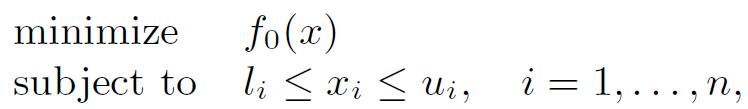
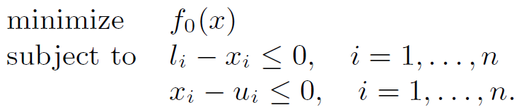
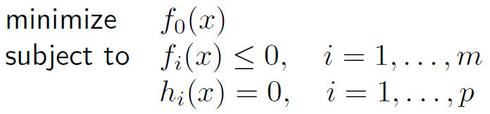
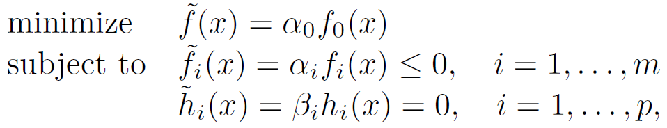
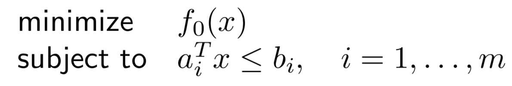
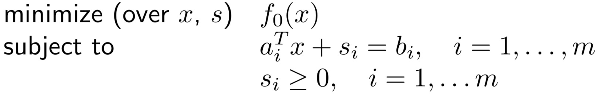
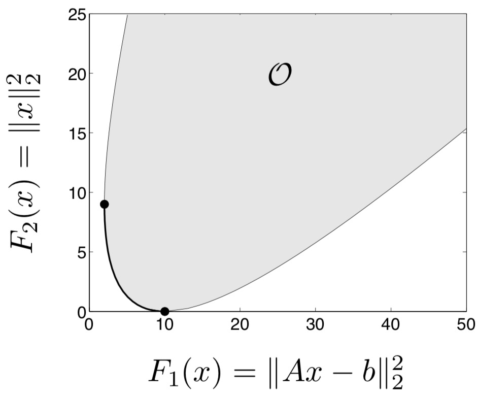

「凸优化」 凸优化问题
本文最后更新于：1 分钟前
凸优化-凸优化问题
凸优化问题
优化问题的标准形式
\[ \begin{aligned} &\min.&f_0(x)\\ &\mathrm{s.t.}&f_i(x)\le 0, i = 1,...,m\\ &&h_i(x) =0 \end{aligned} \]
一些概念：
\(x\in R^n\) 优化变量
\(f_0\) 目标函数（代价函数）
\(f_i:R^n\rightarrow R\) 不等式约束函数
\(h\) 等式约束函数
优化问题的域：\(D=\bigcap \mathbf{dom}~f_i\cap \bigcap \mathbf{dom}h_i\)
可行解集：\(x\in D\) 为可行解，且满足所有的不等式约束、等式约束
最优值：
- \(p^*=\inf\{f_0(x)|f_i(x)\le 0, i = 1, ..., m,h_i(x) = 0, i = 1, ... ,p\}\)
- 没有可行解：\(p^*=\infin\)
- 若问题没有下界，则：\(p^*=\infty\)
最优解 \(x^*\)：若 \(x^*\) 可行，且 \(f_0(x^*)=p^*\)
最优解集：\(X_{opt}=\{x|f_i(x)\le 0, i = 1,...,m, h_i(x) = 0, i = 1, ..., p, f_0(x)=p^*\}\)
\(\epsilon-\)次优解集：\(\epsilon>0,f_0(x)\le p^*+\epsilon\)
局部最优点
- \(x\) 为局部最优点，若存在一个正实数 \(R\) 使得
\[ \begin{aligned} &\min.&f_0(z)\\ &\mathrm{s.t.}&f_i(z)\le 0, i = 1,...,m\\ &&h_i(z) =0 &&||z-x||_2\le R \end{aligned} \]
例如：
- \(f(x) = 1/ x, p^* = 0\) 无最优点
- \(f(x) = -\log x, p^*=-\infin\)
- \(f(x) = x\log x,p^*=-1/e,x=1/e\)
不等式约束
- 活动约束：\(f\le 0\)
- 非活动约束：\(f<0\)
等价问题
可行性优化问题的例子：
例
盒子约束
 转化为

缩放
 转化为

等价问题的解决方法
若有： \[ \begin{aligned} &\psi_0:R\rightarrow R &单调增\\ &\psi_1,...,\psi_m:R\rightarrow R&\psi_i\le 0\leftrightarrow u\le 0\\ &\psi_{m+1},...,\psi_{m+p}:R\rightarrow R&\psi_{i}(u)=0\leftrightarrow u=0\\ &\tilde f_i(x)=\psi_i(f_i(x)),~\tilde h_i(x)=\psi_{m+i}(h_i(x)) \end{aligned} \] 则，将：

转化为：
例如：

转化为：
又如：
\(\min.||Ax-b||_2\iff\min.||Ax+b||_2^2\)
变量变换：\(\tilde{f}_i(z)=f_i(\phi(z)),\tilde{g}_i(z)=h_i(\phi(z))\)
目标函数和约束函数的变换：\(\tilde{f}_i(z)=\varPhi_i(f_i(z)),\tilde{g}_i(z)=\varPhi_i(h_i(z))\)
消除线性等式约束：\(R(F)=N(A)\)
凸优化问题
\[ \begin{aligned} &\min.&f_0(x)\\ &\mathrm{s.t.}&f_i(x)\le 0, i = 1,...,m\\ &&a_i^Tx=b_i \end{aligned} \]
- \(f_i\) 为凸函数 \((i=1...m)\)
松弛变量
例如：
 转化为：

局部和全局最优解
- 凸优化问题的任意局部最优解也是全局最优解
Thm（可微函数的最优性准则）\(x\)为最优解，iff \(x\) 是可行的，且 \(\nabla f_0(x)^T(y-x)\ge 0,~\forall y\in D\)
- 考虑凸函数的一阶条件

线性规划
线性规划问题
\[ \begin{aligned} \min.~c^Tx+d\\ s.t.~Gx\preceq h\\ \qquad Ax=b \end{aligned} \]
线性分式规划
\[ \begin{aligned} \min.& f_0(x)&\\ s.t.& Gx\preceq h\\ &Ax=b& \end{aligned} \]
其中 \[ f_0(x)=\frac{c^Tx+d}{e^Tx+f} \] 为拟凸优化问题，等价于线性规划
二次规划问题
\[ \begin{aligned} \min.& \frac{1}{2}x^TPx+q^Tx+r&\\ s.t.& Gx\preceq h\\ &Ax=b& \end{aligned} \]
二次约束二次规划问题
\[ \begin{aligned} \min.& \frac{1}{2}x^TPx+q^Tx+r&\\ s.t.& \frac{1}{2}x^TP_ix+q_i^T+r_i\le 0\\ &Ax=b& \end{aligned} \]
广义不等式约束

函数 \(f_0:R^n\rightarrow R\) 为凸函数，\(f_i:R^n\rightarrow R^{k_i}\) 为 \(K_i\) 凸函数。
锥形式问题：目标函数、约束函数为仿射函数的形式：
半定规划
其中不等式约束称为线性矩阵不等式 (LMI)
带有多个 LMI 约束的问题，等价于单个 LMI
例如：
向量优化
通用的向量优化问题：
目标函数 \(f_0\) 指在正常锥下最小化
凸向量优化问题：
其中，\(f_0\) 为 K-凸函数，其余为凸函数
最优解和Pareto最优解
Def（可达目标值集合）\(\mathcal O=\{f_0(x)|x~\mathrm{feasible}\}\)
Def（最优解）\(x\) 若 \(f_0(x)\) 为 \(\mathcal O\) 的最小元
Def（Pareto 最优解） \(x\) 若 \(f_0(x)\) 为 \(\mathcal O\) 的极小元
Def（标量化）为了求得 Pareto 最优解，选择 \(\lambda \succ_{K^*}0\) 来求解标量问题
通过变化 \(\lambda\succ_{K^*}0\) 来找到所有的Pareto 最优点
例如：正则化最小二乘问题 \[ \min (w.r.t~R^2_+)\quad(\|Ax-b\|^2_2,\|x\|^2_2) \] 
粗线表示 Pareto 最优点